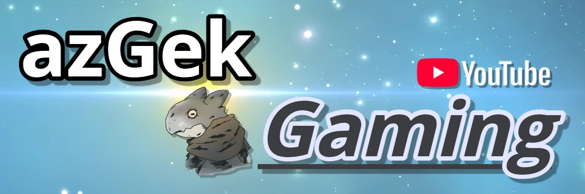

세이브에디터 가이드
세이브에디터 다운로드
Raw JSON 접근 및 헬퍼에 사용법
결과 저장 방법
기지 순서 변경 헬퍼
세이브에디터 필수
UI를 통해 기지 순서를 변경하고
JSON 결과를 생성

함선 순서 변경 헬퍼
세이브에디터 필수
UI를 통해 함선 순서를 변경하고
JSON 결과를 생성
철제독수리, 커스텀함선 등 외형 그대로 순서변경 가능

아즈겍(azGek)의 유튜브 채널
노맨즈스카이(No Man's Sky) 관련 영상을 업로드 예정입니다.

노맨즈스카이 게임플레이 트레일러(팬메이드)
직접 제작한 노맨즈스카이 게임플레이 트레일러입니다.